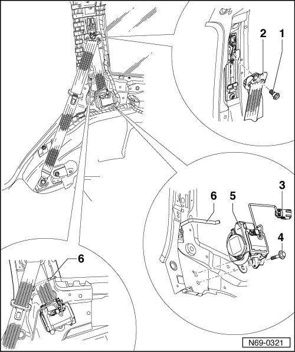

Rear Seat Belts
Rear Seat Belts
• Removal and installation is described for the right-hand side of the vehicle. Removal and installation for the left-hand side is performed in the same manner.
Removing
CAUTION!
Observe safety precautions for belt tensioners --> [ Belt Tensioner Safety Precautions ] Belt Tensioner Safety Precautions.
- Disconnect batteries.
- Remove C-pillar trim --> [ C-Pillar Trim ] C-Pillar Trim.
- Remove roof end strip --> [ Roof End Strip ] Roof End Strip
- Remove D-pillar trim --> [ D-Pillar Trim ] D-Pillar Trim.
- Remove rear lock carrier trim --> Page --> [ Rear Lock Carrier Cover ] Rear Lock Carrier Cover.
- Remove luggage compartment floor --> [ Luggage Compartment Floor ] Luggage Compartment Floor.
- Remove backrest:
• Left --> [ Left Seat Backrest ] Rear Seats
• Right --> [ Right Seat Backrest ] Rear Seats
- Remove side wall trim --> [ Luggage Compartment Side Trim ] Luggage Compartment Side Trim.
- Remove backrest mounting bracket --> [ Backrest Mounting Bracket ] Rear Seats.
- Remove bolt - 1 - (50 Nm) and remove belt relay - 2 - from belt height adjuster.
CAUTION!
Electrostatic discharges can lead to an unintended deployment of the airbag. Therefore the technician must discharge static electricity from the body before separating the ignition and ground wiring. This is done e.g. by briefly touching the body or the door striker or pin.
- Disconnect connector - 3 -.
- Remove bolt - 4 - (50 Nm) and remove belt inertia reel - 5 - from body.

Installing
- Perform the steps used for removal in reverse order.
• When installing, ensure that the belt webbing runs over belt guide - 6 -.